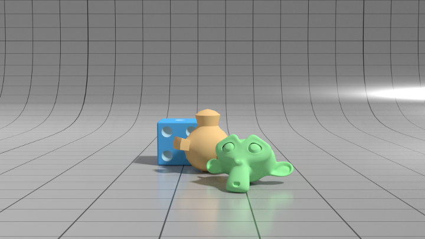
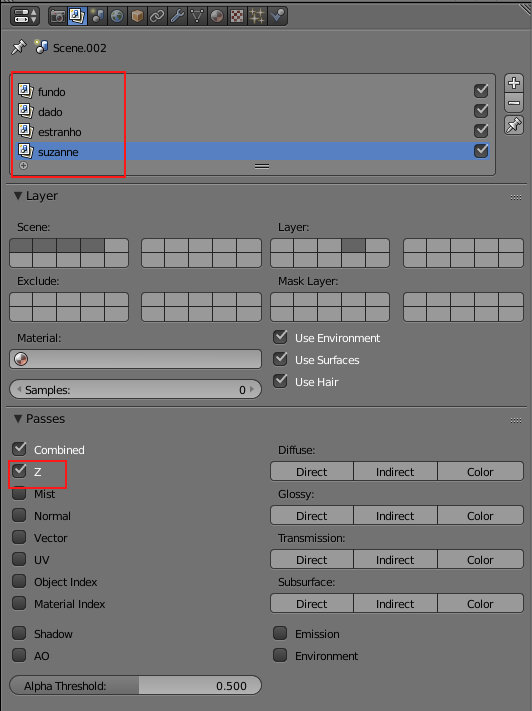
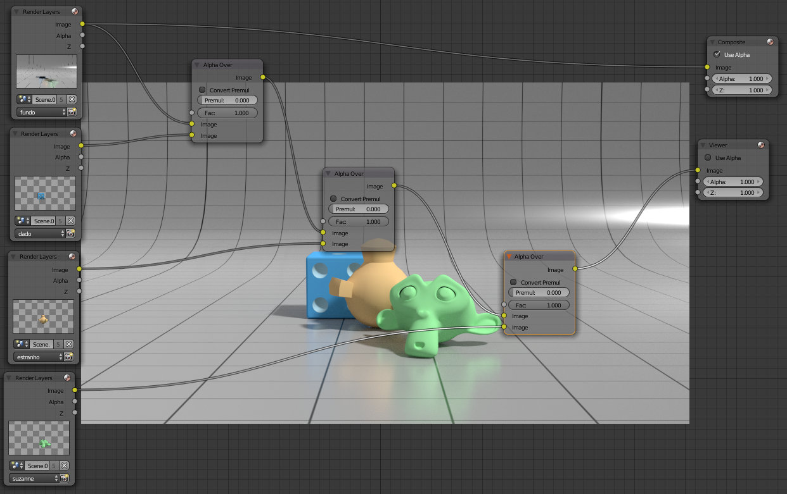
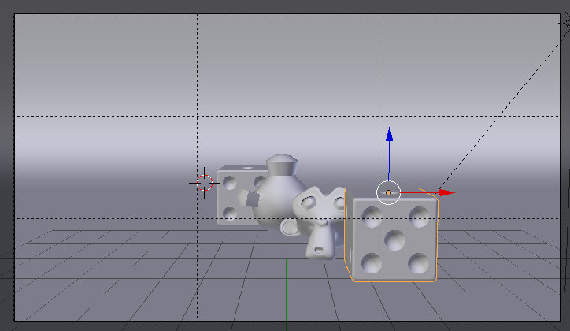
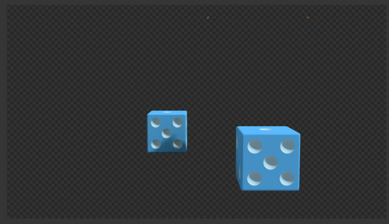
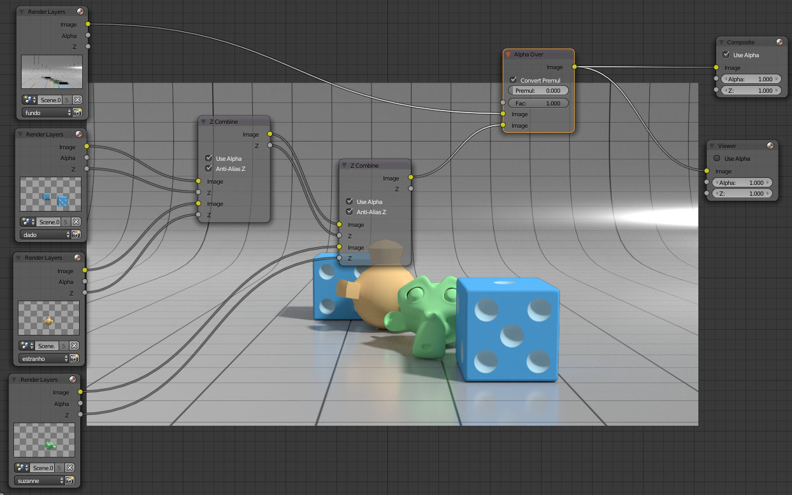
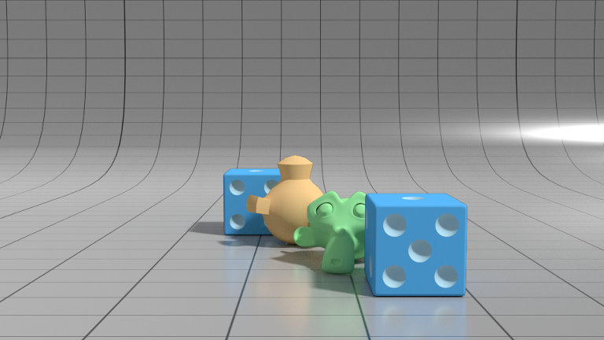

A Render Pass Z é onde está armazenada informação sobre a profundidade, sobre a distância de cada um dos elementos para a câmara.
1- Para demonstrar a utilidade da Render Pass Z, foi criada uma cena com quatro Render Layers. A imagem abaixo é o resultado da combinação das Render Layers fundo (onde está o fundo com grelha), dado (onde está o dado azul), estranho ( onde está o objeto estranho amarelo) e suzanne (onde está a Suzanne verde).
  As quatro Render Layers foram combinadas através do nó Alpha Over. Se tiver dúvidas ou dificuldades com esta cena, recomenda-se a consulta do texto sobre Render Layers. A utilização do Alpha Over na configuração acima produz os resultados desejados apenas porque todas Render Layers têm um valor Z diferente.
Se adicionarmos um novo dado na nossa cena e os dois dados estiverem na mesma Render Layer (a Render Layer dado) mas com valor Z diferentes (os dois dados têm distâncias para a câmara diferentes, um está na frente e outro está no fundo), não vai ser possível utilizar o Alpha Over.
 Nesta situação, com o nó Alpha Over, os dois dados ou estão atrás ou estão à frente. Neste caso, a solução pode ser criar uma Render Layer para cada dado ou utilizar o nó Z Combine (Color).
O Z Combine permite combinar diferentes elementos mas tendo em conta a respetiva distância para a câmara.
 